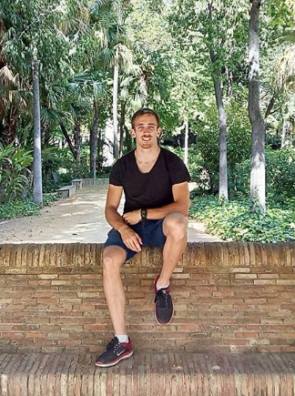

I am a former biotechnologist living between computers and pursuing a PhD in Computational Biology.

At the beggining of my academic career, I wanted to be a wetlab scientist and, in honor to the truth, I didn’t love bioinformatics, so I focussed my bachelor’s thesis in Molecular Microbiology. However, I noticed how crucial informatics-based analyses of biological data are when we externally sequenced and processed our metagenomics data and when I had to make the statistical analysis all by myself without knowing any R. Then, due to sport-related reasons, I dedicated the master’s thesis to the study of yeast gene expression using bioinformatics-based approached. This is when I started to realize that computational biology wasn’t that bad and that I actually liked it.
Today I am working as a bioinformatician in an epigenetics group, mainly studying signal transduction in the Wnt pathway, to which I will dedicate my PhD project and my love.
I could say that my research interests are linked to -omics data analysis related to epigenetics and signal transduction, specially in the context of healthcare.
A part from science, I love scientific divulgation and sport, specially rowing -sport in which I competed at international level- and cycling.